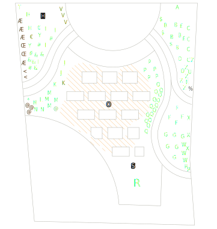

juni 2019 | maart 2020 | mei 2020 | juli 2020 | mei 2021 | juni 2021 | te doen

Ik was zo content van de kruiptijm vorig jaar, 't was te peinzen dat hij de winter niet zou overleven. 't Is te zeggen: de winter is hij nog doorgekomen, maar de zijknatte maanden daarna niet. Op een paar plekken na is hij zo dood als een pier.
De Edelweiss is ook schielijk komen te gaan, vrees ik, en één van de twee salies is zo niet helemaal dan toch bijna helemaal dood. Allemaal van de nattigheid, denk ik.
De clematis heeft een heel klein beetje gebloeid -- een bloem of tien misschien -- en is daarna enorm beginnen schieten. Ik begin mij af te vragen of ik niet beter een veel groter rooster tegen de muur had gezet. En van roosters gesproken: ik heb een poging ondernomen om de klimroos wat zijdelingse ondersteuning te geven, en de ook de vuurdoorn min of meer tegen de muur gefixeerd.
| Naam | in 't Latijns | # | |
|---|---|---|---|
| a | klimroos | Rosa "guirlande d'amour’ | 1 |
| b | donkere ooievaarsbek | geranium phaeum | 5 |
| c | klokjesbloem | campanula latifolia ‘Alba’ | 5 |
| d | mannetjesvaren | Dryopteris felix-mas | 2 |
| e | hartlelie | Hosta sieboldiana ‘elegans’ | 1 |
| f | Japanse zegge | Carex morrowii ‘goldband’ | 4 |
| g | purper klokje | Heucherella ‘Kimono’ | 6 |
| h | prachtriet | Miscanthus sinensis ‘Ferner oster‘ | 3 |
| i | rode zonnehoed | Echinacea purpurea ‘Alaska’ | 4 |
| j | lavendel | Lavendula angustifilia ‘Alba’ | 2 |
| k | salie | Salvia | 2 |
| l | rozemarijn | Rosemarinus | 3 |
| m | tijm | Thymus | 2 |
| n | oregano | Oregano vulgare | 2 |
| o | kruiptijm | Thymus praecox album | ?? |
| p | schoenlappersplant | Bergenia cordifolia | 5 |
| q | bloedooievaarsbek | Geranium sanguineum | 15 |
| r | Japanse esdoorn | Acer palmatum dissectum | 1 |
| s | stekelnootje | Acaena buchananii | 30 |
| % | dragon | Artemisia dracunculus | 1 |
| t | witte regen | Wisteria floribunda ‘Alba’ | 1 |
| u | vuurdoorn | Pyracantha coccinea ‘Orange glow’ | 1 |
| v | edelweiss | Leontopodium alpinum | 3 |
| w | geitenbaard | Aruncus dioicus | 3 |
| x | clematis | Clematis armandii ‘Apple blossom’ | 3 |
| y | prachtklokje | Campanula persicifolia ‘Alba’ | 2 |
| z | duizendknoop | Persicaria affinis ‘Darjeeling Red’ | 5 |
| % | dragon | Artemisia dracunculus | 1 |
| & | vlambloem | Phlox subulata ‘Purple Beauty’ | 5 |
| # | vlambloem | Phlox subulata ‘Amazing grace’ | 4 |
| € | vlambloem | Phlox paniculata ‘Logan black’ | 2 |
| @ | bieslook | Allium schoenoprasum | 3 |
| £ | kattenkruid | Nepeta faassenii ‘Six Hills Giant’ | 2 |
| $ | kattenkruid | Nepeta faassenii ‘Snowflake’ | 3 |
| µ | meiklokje | Convallaria majalis | 2 |
| * | marjolein | Origanum majorana | 1 |
| + | muurleeuwenbek | Cymbalaria muralis | ?? |
| < | pepers | onbekend merk | 1 |
| æ | trostomaten | onbekend merk | 1 |
| œ | tomaten | onbekend merk | 5 |
Die "??"" bij kruiptijm en muurleeuwenbek: da's omdat ik geen flauw idee heb hoeveel planten er van zijn, wegens dat die dingen uitzaaien voor vermoord.